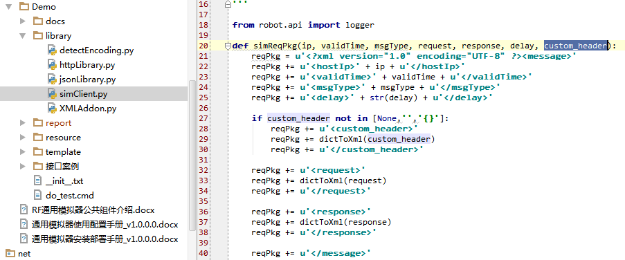
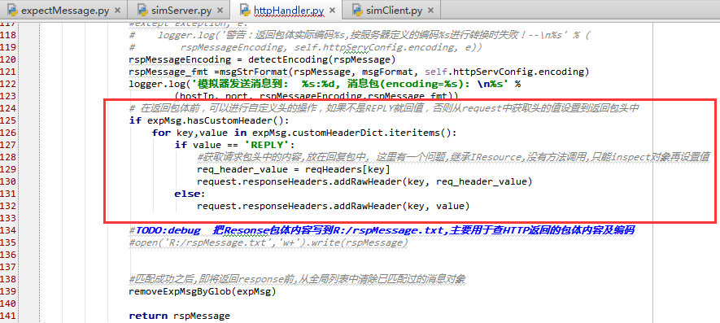

1. Python的安装
- 下载并安装Python
- 设置path变量
- 用户变量PYTHON_HOME设置为Python的安装目录，例如:C:\Python27
- 用户变量PATH的最后加入: ;%PYTHON_HOME%;%PYTHON_HOME%\Scripts

- 设置pip采用国内镜像
编辑%HOMEPATH%\pip\pip.ini, 内容如下:
[global] index-url=http://mirrors.aliyun.com/pypi/simple/ index-url2=https://pypi.mirrors.ustc.edu.cn/simple/ [install] trusted-host=mirrors.aliyun.com
手工更新一下pip的版本 命令行模式下
> pip install http://10.1.3.252:10000/python/pypi/pip-8.1.2-py2.py3-none-any.whl --upgrade2. wxpython的安装
- 下载并安装wxpython2.8
自定义头
- 需求概述
- 自定义头通常在真实系统中有两种情况:
- Client发起请求中带了custom header, SimServer只需要在返回中带上同样的custom header, 其值与请求包相同
- Client发起请求中没有带头, 但该请求是请求一个新的Custom header, 此时SimServer需要在返回包中给一个随机数
- 配置说明
- RF的Resource层关键字中,新增custom_header
- 配置为{"key1":"value1","key2":value2"}
- 如果value的配置为"REPLY",则按请求包的原值返回
- 如果value的配置不是"REPLAY",则按指定值返回 > 也就是说, 随机数可以通过在RF的Client封装中完成指定值; 例如md5或者java加密,分别可以通过RF的python自定义lib和jython+RemoteLibrary来分别实现
如果不配置custom_header, 则缺省传入的参数值为${EMPTY}, 则保持Mock V1中不带Custom Header时的兼容
keyword图（ride）:
testcase图（ride）:

- 实现详解
- 自定义头是通过RF的关键字来实现的
- SimClient.py中新增header
- 利用SimClient.py中的dict2xml,如果header不为空,则把header放在simSet接口XML包中去

- SimServer中对SimSet接口的处理,如果存在header的内容,则把header相关的内容放在expMessage的实体中去

- SimServer在返回包时判断,如果expMsg中存在header的定义,且value为REPLY,则取请求包中的值原样返回; 否则按expMsg中的header指定值加头返回

自定义编码
- 需求概述
- TBD
- 配置说明
- 通过conf/system.xml中的配置实现
- 配置当前只针对http server实现, 也就是说,一个端口的配置是定死的(大部分场景下, 一类接口的编码是一样的)
如果不配置,缺省的encoding为UTF-8, 保持向Mock V1的兼容

- 通过conf/system.xml中的配置实现
- 实现详解
- 自定义编码的实现如下
- system.xml中http server中配置的encoding是最主要的判断因素, 返回包完全按此encoding返回
- 保持template中实际的req和rsp模板在磁盘保存的编码,与上述一致
- Http包体的编码检测,使用了第三方库chardet, 大部分情况下可以准确检测出来编码, 少量情况加入了一些判断,见utils/encoding.py文件中的detectEncoding()功能
- 实现逻辑如下:
- SimServer收到包, 按system.xml中的指定的编码进行转码, 在消息队列中匹配前面预置的expMsg实例,并根据expMsg实例设置返回包中的参数
- 返回包体时,也是先检测包体的encoding
- 对于XML包体的处理,通过转为UNICODE之后,再按system.xml中指定的编码转换后发出(注意,此时未显式指定http包头中的charset)
- Json包体的处理和XML的处理还有一点不同,在于json.Loads()时,处理不了UNICODE多字节的情况,所以是Json包转XML时多了一步,即先转UTF-8
- Json包体的处理, 由于是先转XML再处理,所以各种转码的工作需要考虑把第一行去除,否则第一行中的encoding声明会与包体的实际不一致
- 自定义编码的实现如下
- 其它
- 根据http协议, 包头声明的encoding应与包体的encoding一致; 但现实世界中各系统的实现差异度较大, 所以SimServer目前基本上只考虑包体的实际encoding
- 由于多编码的输出,都需要写日志,所以日志会打印包体的encoding,但写日志文件时全部转为UTF-8写文件,这一点在查看日志时需要注意.
- 所谓的http的encoding支持, 实际上主要还是考虑UTF-8和GBK两种, UTF-8是UNICODE的一种编码实现, UTF-16LE也是UNICODE的一种编码实现,UTF-8占用的网络带宽少,所以UTF-16LE在网络上使用少
- 根据RFC4627的定义, JSON的String缺省UTF-8, 也可以使用
\uxxxx, 如果是后者,则有rspMsg.decode("unicode-escape").encode(encoding)
xpath校验
- 需求概述
- 对于某些接口，被测系统会向第三方发出group模式的xml包，例如NDMP项目；需要校验中间的某个节点值，因此增加xpath校验
- 配置说明
- 主要配置在于NNN接口.txt中，与接口相关的部分的KW
- KW：“模拟器调用请求包构造”的最后二个参数“校验模式”和“应答模式”，缺省均为“NORMAL”, 需要进行XPATH校验时，需要设“校验模式”为“XPATH”
- 传变量的参数，例如{"/Request/apkInfo/contentId":"
{contentName}"}
- 实现详解
- Demo例子，见：Demo/接口案例/XML/01.HTTP简单请求测试.robot 文件中的案例 “xpath验证模式”